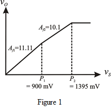

Step 1:
A certain amplifier has a nonlinear transfer characteristic with the following approximations:
The input voltage for small inputs signals,
The gain of the open loop amplifier for small inputs,
For intermediate input signals, , the open loop gain,
For large signals, , the output saturates.
Step 2:
From the data,
With negative feedback loop, there should be a change in gain of
The requirement of gains with feedback is:
Write the formulae for feedback gains.
Now calculate their ratio.
Substitute the known values in the ratio.
Thus, the feedback factor  that reduces the factor-of-10 change in gain to only a 10% change is: .
that reduces the factor-of-10 change in gain to only a 10% change is: .
Step 3:
Calculate the feedback gains of the amplifier.
Similarly,
Step 4:
Calculate the intersection points on the transfer characteristic.
We have,
Calculate the other intersection point.

Step 5:
Draw the transfer characteristic of the amplifier with feedback.

Thus, transfer characteristic of the feedback amplifier is plotted.